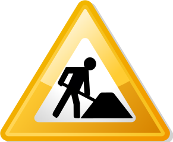

About This Course
Instructor
- ⚡ Michael Friendly datavis.ca home page
- 📫 Email: friendly AT yorku DOT ca
- 𝕏 Twitter: @datavisFriendly; #psy6135
- 🦋 BlueSky: @datavisfriendly.bsky.social Where I mostly am these days.
- Office:
226 BSB - Phone:
x66249 - 💬 Office hour: Wednesday: 11:30-12:30, but by appointment and mostly via Zoom.
- Course web site: https://friendly.github.io/6135/
- Photo mosaic of me (composed of images from the history of data vis); click on the image for a larger version

Class meetings
- Thu., 2:30 pm - 5:30 pm, 207 Behavioural Science Building.
- A few lab sessions may be held in the Hebb Computer lab, 159 BSB, but you’re advised to bring a laptop to class.
Course Description
Summary
This course is designed as a lecture/seminar dealing with data visualization from a largely psychological and historical perspective.
Full description
Information visualization is the pictorial representation of data.
- Successful visualizations capitalize on our capacity to recognize and understand patterns presented in information displays.
- Conversely, they require that writers of scientific papers, software designers and other providers of visual displays understand what works and what does not work to convey their message.
This course will examine a variety of issues related to data visualization from a largely psychological perspective, but will also touch upon other related communities of research and practice related to this topic:
- history of data visualization,
- computer science and statistical software,
- visual design,
- human factors.
We will consider visualization methods for a wide range of types of data from the points of view of both the viewer and designer/producer of graphic displays.
Evaluation
 The description below reflects the course when it was last taught in 2023. The components and weights for evaluation are still being considered, but are likely to remain the same.
Grades will be based on the following components:
Discussion leader (20%) Each session, I ask that 1-2 of you will serve as discussion leader for a brief discussion on one of the readings, sub-topics or an application related to the topic. (~ 5 min.). I will circulate a sign-up sheet for this in the first class.
- It may be helpful to prepare a one-page handout, or your slides, or or other visual materials.
- You can send these to the class listserv.
Class presentation (40%) {#presentations} In the last week or two, each person will give a ~ 20-25 min presentation on a topic of research, application, or software related to data visualization. The topic is not restricted to things covered in the lectures. You’ll find a few random suggested topics on the Resources page, but you can also get a sense of the range and scope of projects from those listed on the Students page
You should prepare a brief topic proposal and send it to me by email by the end of Reading Week, Feb. 21. This is ungraded, but intended to help you shape your topic.
Your in-class presentation should be accompanied by a slide show or other visual materials. It would be best to post your presentation materials in advance, preferably by a link to cloud storage or as an email attachment to the class listserv.
Evaluation of the presentation will be done by peer review as well as by the instructor. A rating form will provided.
Research proposal (40%) Prepare a brief research paper/proposal (normally ~ 6-9 pages) on a data visualization topic. This can be:
- a proposal for an empirical study of some aspect of data visualization,
- an application of visualization methods to a substantative topic,
- an historical review, or
- a something leading to the development or implementation of a graphical method.
The topic should not be identical to that of your presentation and should not be just a repetition of work you’ve done for other courses. This will be due at the end of the exam period, ~ April 25.
Re-use policy

The lecture slides, tutorials and R scripts linked here are available under a Creative Commons Attribution-NonCommercial-ShareAlike license. They are available to everybody under the terms of this license and can be shared, but must be appropriately attributed to me with links to this site.
All other materials, notably course videos, student presentations and support material files, should not be copied beyond your personal machines and hence are not available for redistribution.
Copyright © 2018 Michael Friendly. All rights reserved. || lastModified :
friendly AT yorku DOT ca
 orcid.org/0000-0002-3237-0941
orcid.org/0000-0002-3237-0941